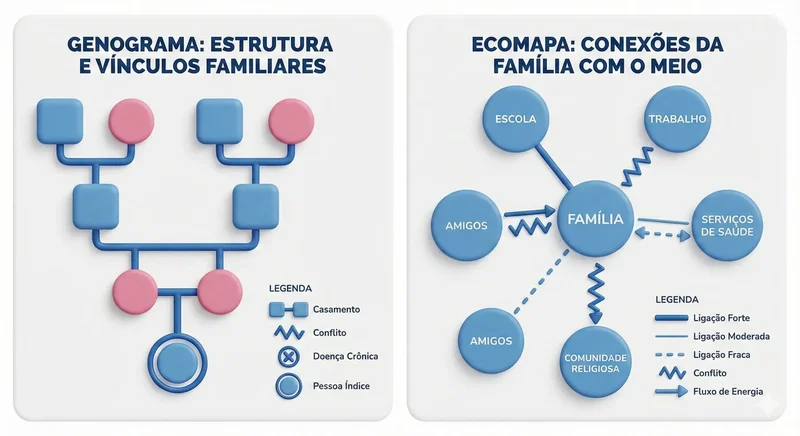

Na área da saúde, especialmente na atenção primária e na enfermagem, compreender o contexto familiar do paciente é fundamental para um cuidado integral e humanizado. Nesse cenário, o Genograma e o Ecomapa se destacam como importantes ferramentas de avaliação familiar, pois permitem visualizar, de forma clara e organizada, as relações internas da família e suas conexões com o meio social.
Esses instrumentos auxiliam profissionais de saúde a identificar padrões de relacionamento, fatores de risco, redes de apoio e possíveis fragilidades que influenciam diretamente o processo saúde-doença.
O que é o Genograma?
O Genograma é uma representação gráfica da estrutura familiar que vai além da árvore genealógica tradicional. Ele permite mapear várias gerações da família, incluindo informações relevantes sobre vínculos afetivos, convivência, histórico de saúde, eventos importantes e relações funcionais entre os membros.
Por meio do genograma, o profissional consegue compreender como a família está organizada, identificar padrões repetitivos ao longo do tempo e reconhecer situações que podem impactar o cuidado em saúde, como conflitos familiares, doenças crônicas ou rupturas nos vínculos. Essa visualização facilita a análise do contexto familiar e contribui para a elaboração de estratégias de cuidado mais individualizadas.
O que é o Ecomapa?
O Ecomapa é uma ferramenta complementar ao genograma e tem como objetivo representar graficamente as relações da família com o ambiente externo. Ele demonstra como a família se conecta com instituições, serviços de saúde, escola, trabalho, comunidade, grupos religiosos e outras redes sociais.
Além de identificar essas conexões, o ecomapa permite avaliar a qualidade e a intensidade dos vínculos, evidenciando quais relações oferecem suporte e quais podem gerar estresse ou sobrecarga. Dessa forma, o profissional de saúde passa a compreender não apenas a estrutura familiar, mas também o contexto social em que essa família está inserida.

A importância do uso do Genograma e do Ecomapa na prática em saúde
O uso conjunto do genograma e do ecomapa possibilita uma avaliação sistêmica da família, considerando aspectos biológicos, psicológicos e sociais. Essas ferramentas favorecem uma visão ampliada do cuidado, permitindo que o profissional identifique necessidades reais, potencialidades e vulnerabilidades do núcleo familiar.
Na prática da enfermagem e de outras áreas da saúde, esses instrumentos contribuem para o planejamento de intervenções mais eficazes, fortalecem o vínculo entre profissional e família e promovem uma abordagem centrada na pessoa e em seu contexto de vida.
Além disso, o genograma e o ecomapa também são amplamente utilizados em pesquisas científicas, especialmente em estudos qualitativos, por facilitarem a coleta e a análise de informações complexas relacionadas à dinâmica familiar e social.
Conclusão
O Genograma e o Ecomapa são ferramentas simples, mas extremamente eficazes, que permitem transformar informações complexas sobre relações familiares e sociais em representações visuais acessíveis. Ao ampliar a compreensão sobre a realidade das famílias, esses instrumentos fortalecem a prática do cuidado integral, favorecem a tomada de decisão clínica e contribuem para uma assistência em saúde mais humanizada e resolutiva.
Comentários
Dúvidas ou sugestões? Escreva abaixo.